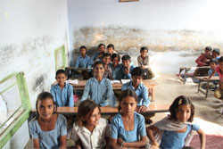

|
Samstag, 29. Dezember 2012 |
35 Jahre terre des hommes Murgtal/Mittelbaden - erfolgreiches Jubiläumsjahr
Konzerte und Kunst für nachhaltige Projekte |

Zum Jahreswechsel 2011/2012 gab es zwei großartige Konzerte in der Gaggenauer Jahnhalle. Dr. Otmar Zwiebelhofer von König Metall und das Kulturamt der Stadt Gaggenau organisierten das Konzert „Schluss mit Schubert“. Im Januar spielte die Bigband der Hochschule für Musik Karlsruhe unter der Leitung von Peter Lehel. Beide Konzerte ergaben bei jeweils mehr als 500 Besuchern einen Erlös von 10.000 Euro für die Erbebenopfer in Haiti.
Der Kinderkalender „Schwarzwald Wunderwelten 2012“, an dem sich 200 Schüler aus Bühl, Gausbach und Rotenfels beteiligten, wurde beim „Gregor International Calender Award 2012“ ausgezeichnet und in Stuttgart bzw. Karlsruhe ausgestellt. Mit dem Erlös von 6.500 € konnten acht Klassenzimmer für eine ethnische Minderheit in Vietnam gebaut werden. Der Kunstkalender mit Motiven von Grochowiak wurde in seiner dritten Auflage verkauft, wobei sich der Gesamterlös auf 17.000 Euro für Projekte gegen Mädchenhandel und sexuelle Ausbeutung im südlichen Afrika erhöhte.
Ein künstlerisch hochwertiges Kammerkonzert mit dem Beethoven Duo fand in der Reithalle Rastatt statt. Der Erlös ging an das Projekt „Schutz gegen sexuelle Gewalt“. Die regionale Arbeitsweise von terre des hommes Murgtal/Mittelbaden zeigte sich beim Benefizkonzert mit Late Heroes beim Polizeipräsidium Karlsruhe.
Im März erbrachte die mittlerweile 21. Radbörse, organisiert von Dr. Dietrich Biedermann und Uli Thoma, 2.100 Euro für ein Ausbildungsprojekt in Simbabwe. Im gleichen Monat äußerte sich Wolfgang Deppisch in einem Leserbrief kritisch zum Textil-Discounter kik in Kuppenheim.
Zum Thema „ökologische Kinderrechte“ organisierte Heinz Wolf an drei Gaggenauer Schulen eine Banner-Aktionen. Gut besucht war der 32. Basar in der Wörtelhalle Kuppenheim. Schließlich nahm die Arbeitsgruppe mehrere größere Spenden zum Jahresende ein. Sehr betroffen waren die Mitarbeiter vom Tod von Professor Thomas Grochowiak, langjähriger Unterstützer und Freund von terre des hommes. |
Donnerstag, 20. Dezember 2012 |
Holzbau Hurrle und Rolladenbau Hurrle: 1.000 Euro für Guatemala |
|
|
| Simon Baumann, Ulrike Dinger und Jens Tschirner übergeben Heinz Wolf von terre des hommes die Spendenschecks. |
Die beiden Gaggenauer Firmen verzichteten zum Jahresende auf das Verschicken von Kundenpräsenten und konnten stattdessen 1.000 Euro der Kinderhilfsorganisation zukommen lassen. „Es ist beeindruckend, dass ein handwerkliches Unternehmen mit wenigen Beschäftigten binnen 13 Jahren den stolzen Betrag von insgesamt 14.400 Euro für Jungen und Mädchen in zukunftsweisenden Projekten gespendet haben“, so Heinz Wolf, Sprecher der mittelbadischen Hilfsorganisation.
In den vergangenen 35 Jahren haben etwa 150 Firmen, Geschäftsleute, Vereine und Institutionen aus Kuppenheim und Bischweier immer wieder terre des hommes Murgtal/Mittelbaden unterstützt, aus Gaggenau waren es 110 (siehe: www.tdh-murgtal.de/Unterstützung). „Da wir nach wie vor aus den Städten und Gemeinden aus der Nachbarschaft großzügig Hilfe erfahren (vor allem aus Gaggenau, Rastatt, Baden-Baden und Muggensturm) und gleichzeitig dort auch Veranstaltungen und Aktionen durchführen, kann man durchaus von einer fruchtbaren interkommunalen Zusammenarbeit sprechen“, so Stadtrat Wolf stellvertretend für die etwa 100 Helfer und Mitarbeiter der Arbeitsgruppe.
Schulunterricht für arbeitende Kinder – Unterstützung aus Mittelbaden
„Weil wir familiäre Bindungen zu Guatemala haben, so ist es uns ein Anliegen, dass unsere Spende dort ankommt und wirksam eingesetzt wird“, so Ulrike Dinger von Holzbau Hurrle zu ihrer 750-Euro-Spende. Jens Tschirner von Rollladenbau Hurrle hat weitere 250 Euro zum Bildungsprojekt „Pennat“ dazugetan.
Bildung schafft -Zukunft – ein Grundprinzip von terre des hommes
Maya-Ruinen und Urwälder - meist die ersten Assoziationen, wenn man an Guatemala denkt. Doch nur ein kleiner Teil der Bevölkerung dort profitiert von den kulturellen Schätzen und der wunderschönen Natur. Die meisten Guatemalteken leiden unter drückender Armut: Um über die Runden zu kommen, muss oft die ganze Familie arbeiten. Die Kinder können die Schule dann nicht besuchen. Auch die zwölfjährige Juana nicht: »Ich stehe jeden Morgen um halb sechs auf und fahre mit meinem Cousin Christian auf den Markt. Wir verkaufen dort Gewürze. Juana ist eines von schätzungsweise 800.000 arbeitenden Mädchen und Jungen in Guatemala. Viele von ihnen schuften auf den Märkten der Hauptstadt: Sie helfen in den Küchen, verkaufen Kaugummis oder schleppen Gemüsekisten. Sie haben kaum eine Chance, jemals eine qualifizierte Tätigkeit auszuüben.
Die von terre des hommes unterstützte Organisation PENNAT führt auf den Märkten von Guatemala-Stadt Schulunterricht für arbeitende Kinder durch und sorgt dafür, dass sie eine Ausbildung bekommen. Das Schulangebot läuft bereits seit mehreren Jahren und wurde vom Erziehungsministerium anerkannt. PENNAT bietet auch Computer-, Grafikdesign- und Elektrotechnik- Kurse an, um die Chancen der Jugendlichen zu erhöhen, eine qualifizierte Tätigkeit zu finden. Derzeit erhalten 120 arbeitende Kinder und Jugendliche eine Schulbildung. Besonders achtet PENNAT darauf, dass auch Mädchen am Programm teilnehmen.
Ihre Spende - Stichwort: "Pennat Guatemala"
Spendenkonto 51 51
Bank für Sozialwirtschaft
BLZ 370 205 00
Spendenkonto 120 790
Sparkasse Baden-Baden / Gaggenau
BLZ 662 500 30
Spendenkonto 102 748 00
VoBa Baden-Baden / Rastatt
BLZ 662 900 00 |
Freitag, 14. Dezember 2012 |
Daimler-Werk Gaggenau spendet 10.000 Euro für Mädchenrechte im Bundesstaat Rajahsthan |
"Terre des hommes Deutschland e.V. setzt sich für die Schaffung einer Zukunft von Kinder in einer gerechten und friedlichen Welt ein. Im Rahmen des Projektes „Mädchenrechte im Bundesstaat Rajahsthan, Indien“ werden für den regulären Schulbesuch von Mädchen dringend Fahrräder benötigt.
Zurzeit sind in der Region ca. 75 % der Mädchen und Frauen Analphabeten. Mit dem Schulbesuch soll dem Abhilfe geschaffen aber auch die Selbsthilfekräfte und die aktive Teilhabe der Mädchen und Frauen an politischen und sozialen Entwicklungsprozessen gestärkt werden.
Die Belegschaft des Werkes Gaggenau und das Unternehmen beteiligt sich im Rahmen der ProCent Aktion am Kauf von 200 Fahrrädern für Mädchen für den Schulbesuch in Höhe von 10.000 Euro. Herzlichen Dank an alle ProCent Teilnehmenden!"
Quelle: Mitteilung des Betriebsrats am 12.12.2012
Seeta bekommt ein Fahrrad: In zwanzig Dörfern im indischen Rajasthan erhalten Mädchen endlich mehr Rechte
|
Seeta freut sich über ihr neues Fahrrad |
|
… und die anderen Mädchen auch. |
|  |
Der Schulunterricht wird besser, die Eltern - von SWERA unterstützt - achten darauf. |
|
Auch Mädchen haben Rechte! Häusliche Gewalt und Kinderheirat werden in den Kindergruppen und in der Schule thematisiert. |
Seeta strahlt, denn heute ist ein großer Tag für sie: Seeta bekommt ein Fahrrad. Ab jetzt wird die Zwölfjährige die sechs Kilometer zur Schule nicht mehr laufen müssen. Sie wird den Fahrtwind im Gesicht spüren und pünktlich in der Klasse ankommen.
Wie Seeta sind heute 26 Mädchen nach Kanpura im indischen Rajasthan gekommen, um ihr Fahrrad abzuholen – 26 von insgesamt 200 neuen Radfahrerinnen. Sie wurden von den Gemeindearbeiterinnen der Organisation SWERA (Social Work and Environment for Rural Advancement) ausgesucht: Weil sie einen weiten Schulweg haben und ihre Eltern nicht in der Lage sind, selbst ein Fahrrad zu kaufen. Sie haben ein Formular ausgefüllt, in dem sie den Bedarf begründet und erklärt haben, dass sie das Fahrrad nicht verkaufen, gut pflegen und vor allem für den Schulweg nutzen werden.
Die Gemeindearbeiterinnen, die selbst in den Dörfern wohnen, kennen die Situation der Familien: Meist leben sie von kärglicher Landwirtschaft und ein paar Nutztieren. Die Gegend ist eine der ärmsten in ganz Indien. Das Hüten der Tiere ist meist Aufgabe der Kinder – zumindest dann, wenn die Schule sowieso zu weit weg ist oder so schlechten Unterricht bietet, dass Eltern und Kinder keinen Sinn darin sehen.
Reden, spielen und sich wehren lernen
Die Verbesserung des Schulunterrichts ist deshalb ein wichtiges Ziel von terre des hommes, der Kinderrechtsorganisation aus Deutschland, die zusammen mit SWERA frischen Wind in die Dörfer bringen will. Und es gibt bereits Erfolge: So fand zum Beispiel bis vor wenigen Monaten in einer der Dorfschulen kaum Unterricht statt. Der Lehrer fehlte oder schlief – bis die Eltern selbst, ermutigt durch SWERA, ihn zur Rede stellten und das Recht ihrer Kinder auf eine gute Grundbildung einforderten. Nun weiß der Lehrer, dass die Bauernfamilien sich nicht mehr alles gefallen lassen, auch wenn sie arm sind und meist zur untersten Kaste gehören. Und genau das ist es, was terre des hommes und SWERA erreichen wollen.
Ebenso wichtig ist es für terre des hommes, besonders die Rechte der Mädchen durchzusetzen, die im traditionellen Rajasthan oft ignoriert werden. Und auch das funktioniert – wenn auch unter den skeptischen Blicken der Jungen und Männer: Es wurden innerhalb eines halben Jahres bereits sechs Kinderheiraten verhindert, und die häusliche Gewalt gegen Frauen und Kinder ist Thema in den Schulen und Kindergruppen, die die SWERA-Gemeindearbeiterinnen gestalten und wo täglich ein paar Stunden gespielt, gelernt und über Probleme geredet werden kann.
In den zwanzig Dörfern weht ein neuer Wind – und besonders die Frauen und Mädchen sind froh darüber, dass sie dabei im Mittelpunkt stehen. Die Jungen sind manchmal ein bisschen neidisch, aber nicht wenige fangen an nachzudenken: über Rechte und über Gerechtigkeit. Und so soll es sein.
Text und Fotos: Iris Stolz (tdh)
Ihre Spende - Stichwort: "Mädchenrechte Rajahsthan"
Spendenkonto 51 51
Bank für Sozialwirtschaft
BLZ 370 205 00
Spendenkonto 120 790
Sparkasse Baden-Baden / Gaggenau
BLZ 662 500 30
Spendenkonto 102 748 00
VoBa Baden-Baden / Rastatt
BLZ 662 900 00
ProCent Förderfonds: Daimler Beschäftigte spenden freiwillig die Cent-Beträge ihres Netto-Entgelts
Unternehmen verdoppelt die Cent-Beträge der Mitarbeiterinnen und Mitarbeiter Angesparte Summe wird für gemeinnützige Initiativen im In- und Ausland eingesetzt
Einfach, schnell und unbürokratisch helfen. Das ist die Idee, die hinter Daimler ProCent steckt. Alle Daimler Mitarbeiterinnen und Mitarbeiter haben ab Dezember 2011 die Möglichkeit, den Cent-Betrag ihrer monatlichen Netto-Entgeltauszahlung zu spenden. Der Betrag kann demnach zwischen mindestens einem und maximal 99 Cent variieren. Der entsprechende Cent-Betrag wird nicht ausbezahlt, sondern auf ein speziell zu diesem Zweck eingerichtetes Konto überwiesen.
In den Förderfonds von Daimler ProCent können alle Beschäftigten aus Produktion, Entwicklung, Verwaltung oder Vertrieb einzahlen. Jeder gespendete Cent wird vom Unternehmen verdoppelt.
Der neue Förderfonds geht auf eine Initiative des Gesamtbetriebsrats zurück und wird von der Unternehmensleitung und dem Gesamtsprecherausschuss als eine weitere Säule des gesellschaftlichen Engagements von Daimler unterstützt und gefördert. Die drei genannten Gremien haben eine Betriebsvereinbarung getroffen, in der unter anderem das Spendenverfahren und die Verwendung der Fördermittel geregelt sind.
Wilfried Porth, Mitglied des Vorstands der Daimler AG für Personal und Arbeitsdirektor des Unternehmens: „Mit dem ProCent Förderfonds setzen wir ein gemeinsames Zeichen für gesellschaftliche Verantwortung und unterstützen aktiv das soziale Engagement unserer Mitarbeiter. Die Idee ist ein toller Beleg dafür, dass mit gebündelter Kraft auch kleine individuelle Beiträge in Summe genommen Großes bewegen können.“
Erich Klemm, Gesamtbetriebsratsvorsitzender der Daimler AG: „Wir freuen uns, dass auf unsere Initiative hin mit ProCent künftig dauerhaft und nachhaltig sinnvolle ökologische und soziale Projekte gefördert werden. Unser Ziel ist es, viele Beschäftigte dafür zu gewinnen. Besonders wichtig ist uns, dass auf Vorschlag unserer Kolleginnen und Kollegen auch regionale Projekte unterstützt werden.“
Über die Verwendung der Gelder aus dem Daimler ProCent Förderfonds entscheiden ein Gremium aus Gesamtbetriebsrat, Gesamtsprecherausschuss und Unternehmensleitung sowie örtliche, ebenfalls paritätisch besetzte Gremien. Die Spenden sollen gesellschaftlich relevante und gleichzeitig gemeinnützige Projekte im In- und Ausland unterstützen.
Die angesparte Summe kommt je zur Hälfte regionalen Projekten an Werksstandorten und übergreifenden Projekten im In- und Ausland zugute. Allen gemeinsam ist, dass sie als gemeinnützig anerkannt sein müssen und im Schwerpunkt Hilfen für Kinder, Jugendliche, Behinderte bieten oder zum Umwelt- und Naturschutz beitragen. Vorschläge für förderungswürdige Initiativen können jederzeit von allen Beschäftigten bei den ProCent Koordinatoren der einzelnen Standorte eingereicht werden.
Der ehrenamtliche Einsatz von Mitarbeiterinnen und Mitarbeitern anlässlich der Aktion „Wir bewegen was“ – 125 Mitarbeiterprojekte der Nachhaltigkeit“, die im Rahmen der Aktivitäten zum 125. Geburtstag des Automobils durchgeführt wurde, hat gezeigt, wie vielfältig die Beschäftigten der Daimler AG sich in ihrer Freizeit engagieren. Daimler hat im Rahmen dieser Aktion 125 Mitarbeiter-Projekte der Nachhaltigkeit mit insgesamt 625.000 Euro unterstützt. |
Freitag, 14. Dezember 2012 |
Tödliches Feuer in Textilfabrik: Konsequenzen gefordert |
Angesichts des verheerenden Brandes in der Textilfabrik Tazreen Fashion in Bangladesh, dem am 24. November über 100 Arbeiterinnen und Arbeiter zum Opfer gefallen sind, zeigt sich terre des hommes schwer erschüttert. Hunderte Menschen wurden verletzt und traumatisiert. Unser Mitgefühl gilt den Opfern dieser Tragödie und ihren Familien. Die Brandkatastrophe war vorhersehbar, denn es fehlte hier wie in den meisten Fabriken in Bangladesh, Pakistan und Indien, die Textilien für den Weltmarkt produzieren, selbst an einfachstem Schutz. terre des hommes fordert Konsequenzen von den Auftraggebern.
Am Donnerstag, den 29.11. um 20.15 Uhr, berichet der SWR in der Sendung »Zur Sache Baden-Württemberg«, in einem 20-minütigen Schwerpunkt »Billig, Billiger, egal wie? Was ist uns die Kleidung wert?« über das Thema. Darin gibt es auch eine Stellungnahme der terre des hommes-Expertin Barbara Küppers. |
Freitag, 14. Dezember 2012 |
Protest gegen Kürzungen der Entwicklungshilfe |
terre des hommes und Welthungerhilfe fordern vom Bundestag die geplanten Kürzungen im Entwicklungshilfeetat in Höhe von 124 Millionen Euro zurückzunehmen und stattdessen den Etats aufzustocken. Zugleich weisen sie auf den 20. Bericht zur Wirklichkeit der deutschen Entwicklungspolitik hin, den die beiden Organisationen heraus geben.
Weiterlesen auf tdh.de |
Montag, 10. Dezember 2012 |
Barbara Schöneberger, terre des hommes-Botschafterin:
Schule statt Steinbruch - Schenken Sie Kindern Hoffnung! |
»Das kann doch alles nicht wahr sein« - das ging mir durch den Kopf, als ich die bedrückende Armut vieler Kinder in Indien gesehen habe. Jetzt in den Wochen vor Weihnachten denke ich wieder daran. Und daran, wie mich die Kinder trotz der Armut voller Lebensfreude angestrahlt haben. Umso schlimmer finde ich, dass Millionen von ihnen zur Kinderarbeit gezwungen werden, was die Not zementiert.
terre des hommes hilft Hunderttausenden dieser Kinder: Jay und Saroja sind zwei von ihnen. Sie leben bei den Steinbrüchen nahe der Stadt Bundi im Bundesstaat Rajasthan. Steinbrüche gehören zu den schlimmsten Orten ausbeuterischer Kinderarbeit weltweit. Mit ihren zwölf Jahren haben Jay und Saroja schon brutale Zeiten durchlebt. Jay hat chronische Rückenschmerzen vom Steine schleppen und ein herabstürzender Brocken hat ihm den Fuß gebrochen. Saroja leidet stark unter dem Lärm und dem Staub im Steinbruch.
So grausam diese Wirklichkeit ist, es gibt Hoffnung, terre des hommes sorgt dafür, dass Jay und Saroja warme Mahlzeiten und medizinische Hilfe erhalten, außerdem besuchen sie jetzt eine »Brückenschule«, damit sie bald in die Regelschule wechseln können. In der Krippe nebenan werden kleinere Kinder betreut, damit sie nicht im Steinbruch spielen. Jay und Saroja sind nun die ersten in ihren Familien, die lesen und schreiben lernen! Bildung ist für sie der Schlüssel, um den Teufelskreis der Armut zu durchbrechen.
Ich habe mit eigenen Augen gesehen, was Ihre Spenden bewirken. Die Mitarbeiter vor Ort sind mit großer Freude und unermüdlichem Einsatz für die Kinder da. Voller Wissbegierde lernen die Kinder gemeinsam. Sie werden mit jedem Tag selbstbewusster und wachsen über sich selbst hinaus. Jedes Kind, das ich in den Projekten kennenlernen durfte, habe ich in meiner Erinnerung behalten. Und es freut mich von ganzem Herzen, dass diese Mädchen und Jungen nun Gutes erfahren: Bildung, Zuwendung und Schutz sichern ihnen eine aus�sichtsreiche Zukunft.
Dank der Unterstützung vieler Spenderinnen und Spender kann terre des hommes diesen Kindern helfen!
Kinderarbeit weltweit
Sie besticken T-Shirts, pflücken unter sengender Sonne Baumwolle oder spalten mit schweren Hämmern Steine - häufig an sieben Tagen in der Woche und für einen Hungerlohn. Man schätzt, dass 215 Millionen Kinder auf der Welt arbeiten müssen. Davon werden 115 Millionen Kinder massiv ausgebeutet: ihre Gesundheit wird ruiniert und für die Schule bleibt keine Zeit. 73 Millionen Kinderarbeiter sind unter zehn Jahre alt. Etwa 22.000 Kinder kommen weltweit jedes Jahr durch Arbeits�unfälle ums Leben.
Die Folgen von Kinderarbeit in Steinbrüchen
Die Arbeit in Steinbrüchen gehört zu den schlimmsten Formen ausbeuterischer Kinderarbeit: Dort werden Kinder schwer verletzt oder sterben bei Arbeitsunfällen. Der immense Staub schädigt ihre Haut, Augen und Lungen. Sie verletzen sich mit zu schweren und zu großen Werkzeugen; es gibt keine Schutzkleidung. Man schätzt, dass etwa eine Million Kinder weltweit in Minen und Steinbrüchen ausgebeutet werden.
Die Ursache: Armut
Kinder arbeiten, um zu überleben, denn ihre Eltern verdienen nicht genug, um die Familie zu ernähren. Gesetze gegen Kinderarbeit sind wichtig, doch sie alleine wirken nicht. Entscheidend ist, dass die Armut der Familien überwunden wird. Deshalb sind Einkommenshilfen neben Schul- und Berufsbildung feste Bestandteile vieler terre des hommes-Projekte.
Der Ausweg: Bildung
Die Partner von terre des hommes setzen sich in vielen Ländern gegen Kinderarbeit ein. In Guatemala z. B. müssen mehr als 700.000 Kinder arbeiten. Auf dem Markt von Guatemala Stadt sieht man mehr arbeitende Kinder als Erwachsene. Im Projekt PENNAT, das von terre des hommes unterstützt wird, erhalten über 800 Kinder eine Schulbildung direkt am Marktplatz. Auch Kurse für Elektrotechnik und EDV sowie die Ausbildung zum Sanitäter werden angeboten. Einige Schüler schaffen es bis zum Studium!
Gegenwärtig erreicht terre des hommes mit seinen lokalen Partnern rund 250.000 arbeitende Kinder weltweit und gibt ihnen die Chance auf einen Neuanfang.
Bitte unterstützen Sie uns - auch kleine Beträge helfen:
- Mit 5 Euro im Monat schicken Sie einen Kinderarbeiter in die Schule.
- Mit 20 Euro im Monat sorgen für die Ausbildung eines Kinderarbeiters.
- Mit 60 Euro monatlich sichern sie das Gehalt eines Lehrers an der Abendschule.
Ihre Spende - Stichwort: "Kinderarbeit"
Spendenkonto 51 51
Bank für Sozialwirtschaft
BLZ 370 205 00
Spendenkonto 120 790
Sparkasse Baden-Baden / Gaggenau
BLZ 662 500 30
Spendenkonto 102 748 00
VoBa Baden-Baden / Rastatt
BLZ 662 900 00
Weitere Informationen:
|
Montag, 10. Dezember 2012 |
Zum internationalen Tag der Menschenrechte am 10. Dezember:
Menschenrechte in der Textilproduktion schützen! |
Die Brandkatastrophen in Nähereien in Bangladesh und Pakistan verdeutlichen auf katastrophale Weise drastische Menschenrechtsverletzungen in der globalen textilen Lieferkette. Weltweit arbeiten etwa 24 Millionen Menschen in der Textilindustrie, 80 Prozent sind Frauen. In Südasien schuften Frauen zu Hungerlöhnen in der Textilbranche. In Usbekistan schickt die Regierung Schulkinder zur Baumwollernte auf pestizidverseuchte Felder. In Südindien werden 120.000 junge Mädchen in Baumwollspinnereien wie Sklaven ausgebeutet.
Gesetzeslücken und mangelhafte Kontrollsysteme, Korruption und Repressionen gegen Gewerkschaften blockieren jede Entwicklung hin zu menschenwürdigen Arbeitsbedingungen. Das erklärte das internationale Kinderhilfswerk terre des hommes anlässlich des Tages der Menschenrechte am kommenden Montag.
»Es liegt in der Verantwortung der Regierungen, ihre Bürgerinnen und Bürger vor der Verletzung ihrer Menschenrechte zu schützen. Die Brandkatastrophen und das erneute Aufkommen von Sklaverei zeigen, dass selbstorganisierte Kontrollen und Programme von Handelsunternehmen offensichtlich nicht ausreichen«, so Barbara Küppers, Kinderrechtsexpertin von terre des hommes.
Regierungen müssen sicherstellen, dass die bereits existierenden internationalen Standards für menschenwürdige Arbeitsbedingungen und Unternehmensverantwortung tatsächlich umgesetzt werden. Hierfür geben die Richtlinien des Menschenrechtsrates der Vereinten Nationen allgemein akzeptierte Standards vor. Die Bundesregierung sollte sich für die zügige Umsetzung in nationales und europäisches Recht einsetzen, ebenso wie für die Respektierung der ILO Konventionen und der OECD-Leitsätze für multinationale Unternehmen.
Verbraucher können bei ihrem Weihnachtseinkauf diese Anliegen unterstützen und gegenüber Handelsunternehmen und Markenfirmen deutlich machen, dass ihnen menschenwürdige Arbeitsbedingungen wichtig sind. |
Freitag, 07. Dezember 2012 |
Nachruf zum Tod von Professor Thomas Grochowiak |

Der Tod von Thomas Grochowiak hat uns tief getroffen.
Seit nunmehr zwanzig Jahren hat er terre des hommes nachhaltig unterstützt. Seine gespendeten Bilder und Drucke für den Herbst-Basar waren Jahr für Jahr Anziehungspunkt für unser kunstinteressiertes Publikum. Mit dem Verkauf konnten wir einen stattlichen Erlös erzielen und den Projekten von terre des hommes nachhaltige Hilfe zukommen lassen.
Der Kunstkalender, der anlässlich des 95. Geburtstags von Thomas Grochowiak in drei aufeinanderfolgenden Auflagen erschien, war das letzte gemeinsame Projekt. Großzügig, mit viel Engagement und Herzblut, hat er uns die wertvollen Bilder zum Kalender zur Verfügung gestellt und uns in vielen Stunden bei der Gestaltung beraten.
Mit regelmäßigen Besuchen unserer Veranstaltungen haben Thomas Grochowiak und seine Frau Karin Ihre Verbundenheit zu unserer Gruppe gezeigt.
Unvergessen bleiben die zahlreichen Gespräche und Begegnungen mit Thomas Grochowiak. Kritisch und stets anregend war seine Ansicht zu politischen und gesellschaftlichen Themen, lehrreich, interessant und äußerst kurzweilig seine Vorträge und Einlassungen zum Bereich Kunst.
Wir bleiben ihm, unserem väterlichen Freund, mit großem Dank verbunden. Unser Mitgefühl gilt seiner Ehefrau Karin und seiner Familie. Mit Thomas Grochowiak verlieren wir einen großzügigen und engagierten Unterstützer für terre des hommes.
Die Mitarbeiterinnen und Mitarbeiter
von terre des hommes Murgtal/Mittelbaden
|
|
|
| Thomas Grochowiak anlässlich seines 95. Geburtstag in seiner Gemäldegalerie. |
|
Freitag, 07. Dezember 2012 |
Zum internationalen Tag der Menschenrechte am 10. Dezember:
Menschenrechte in der Textilproduktion schützen! |
Die Brandkatastrophen in Nähereien in Bangladesh und Pakistan verdeutlichen auf katastrophale Weise drastische Menschenrechtsverletzungen in der globalen textilen Lieferkette. Weltweit arbeiten etwa 24 Millionen Menschen in der Textilindustrie, 80 Prozent sind Frauen. In Südasien schuften Frauen zu Hungerlöhnen in der Textilbranche. In Usbekistan schickt die Regierung Schulkinder zur Baumwollernte auf pestizidverseuchte Felder. In Südindien werden 120.000 junge Mädchen in Baumwollspinnereien wie Sklaven ausgebeutet.
Gesetzeslücken und mangelhafte Kontrollsysteme, Korruption und Repressionen gegen Gewerkschaften blockieren jede Entwicklung hin zu menschenwürdigen Arbeitsbedingungen. Das erklärte das internationale Kinderhilfswerk terre des hommes anlässlich des Tages der Menschenrechte am kommenden Montag.
»Es liegt in der Verantwortung der Regierungen, ihre Bürgerinnen und Bürger vor der Verletzung ihrer Menschenrechte zu schützen. Die Brandkatastrophen und das erneute Aufkommen von Sklaverei zeigen, dass selbstorganisierte Kontrollen und Programme von Handelsunternehmen offensichtlich nicht ausreichen«, so Barbara Küppers, Kinderrechtsexpertin von terre des hommes.
Regierungen müssen sicherstellen, dass die bereits existierenden internationalen Standards für menschenwürdige Arbeitsbedingungen und Unternehmensverantwortung tatsächlich umgesetzt werden. Hierfür geben die Richtlinien des Menschenrechtsrates der Vereinten Nationen allgemein akzeptierte Standards vor. Die Bundesregierung sollte sich für die zügige Umsetzung in nationales und europäisches Recht einsetzen, ebenso wie für die Respektierung der ILO Konventionen und der OECD-Leitsätze für multinationale Unternehmen.
Verbraucher können bei ihrem Weihnachtseinkauf diese Anliegen unterstützen und gegenüber Handelsunternehmen und Markenfirmen deutlich machen, dass ihnen menschenwürdige Arbeitsbedingungen wichtig sind.
|
Samstag, 01. Dezember 2012 |
terre des hommes zum Weltaidstag am 1. Dezember:
Aids-Infektion von Neugeborenen muss reduziert werden |
Die Zahl der Kinder, die sich neu mit dem HI-Virus infizieren, ist nach UN-Angaben weiter rückläufig. Weltweit fiel sie um rund 25 Prozent auf 330.000 Kinder. Besorgniserregend bleibt allerdings die Infektionsrate bei Babys von HIV-positiven Müttern, insbesondere im südlichen Afrika. Dies erklärte das internationale Kinderhilfswerk terre des hommes anlässlich des Weltaidstages am 1. Dezember.
»Die rückläufigen Zahlen aidsinfizierter Kinder zeigen, dass es sich lohnt, in die Versorgung mit lebensrettenden Medikamenten und in Programme zur Aidsprävention zu investieren«, erklärte terre des hommes-Gesundheitsexpertin Tanja Funkenberg.
Allerdings erhalten nach wie vor viel zu wenige schwangere Frauen, die HIV-positiv sind, die richtigen Medikamente und eine gezielte Beratung. Es fehlt an Gesundheitspersonal und Hebammen, die die Frauen und ihre Angehörigen über den richtigen Umgang mit der Krankheit aufklären. »Wir wissen aus unserer Projektarbeit, dass viele Frauen keinen Zugang zu kostenlosen oder erschwinglichen Gesundheitsleistungen haben und zudem Diskriminierungen zu befürchten haben, wenn sie einen Aids-Test machen. Es ist deshalb zwingend erforderlich, dass die Gesundheitssysteme in armen Ländern besonders auf die Bedürfnisse der Frauen ausgerichtet und Frauen in ihren Rechten gestärkt und vor Stigmatisierung geschützt werden. Dies ist damit ein wichtiger Beitrag gegen die HIV-Übertragung von der Mutter auf das Kind.«
Der terre des hommes Partnerorganisation Ubuntu in Südafrika sei es gelungen, viele Babys ohne HIV zur Welt zu bringen, obwohl die Mütter positiv sind, so Tanja Funkenberg. Neben der Verschreibung von Medikamenten für Mutter und Kind rät Ubuntu, das Baby in den ersten sechs Monaten ausschließlich zu stillen, da es so mit den aufgenommenen Abwehrstoffen nicht so leicht erkranken kann. »In Südafrika konnten fast drei Viertel aller schwangeren Frauen motiviert werden, an einem Programm zur Vermeidung einer Übertragung des HI-Virus von der Mutter auf das Kind teilzunehmen. Die Bundesregierung sollte gerade solche Maßnahmen, die nachweislich eine HIV-Ansteckung bei Kindern verhindern, verstärkt fördern«, so Tanja Funkenberg.
Weltweit leben 34 Millionen Menschen mit dem HI-Virus. 0,8 Prozent aller Menschen im Alter zwischen 15 und 49 Jahren weltweit sind HIV-positiv. |
|
|
|
 Ansprechpartner Ansprechpartner
|
|
Wolfgang Deppisch
(Projektinfos)
Tel. 07222 / 32927
Heinz Wolf
(Sponsoring, Allgemeines)
Tel. 07225 / 75543
weitere Ansprechpartner
|
|
Erlöse
1992-2012
|
|

Jahr |
Euro |
1992 |
70.000 |
1993 |
75.600 |
1994 |
83.883 |
1995 |
69.617 |
1996 |
51.412 |
1997 |
61.749 |
1998 |
60.333 |
1999 |
68.742 |
2000 |
85.492 |
2001 |
106.375 |
2002 |
78.937 |
2003 |
84.027 |
2004 |
76.662 |
2005 |
149.941 |
2006 |
84.497 |
2007 |
105.958 |
2008 |
104.053 |
2009 |
100.833 |
2010 |
107.254 |
2011 |
103.600 |
| 2012 |
158.250 |
| 2013 |
163.420 |
1977-2013 |
mehr als 2,7 Mio. € |
|
Detailansicht der Erlöszahlen |
|
|


;)
;)
;)
;)